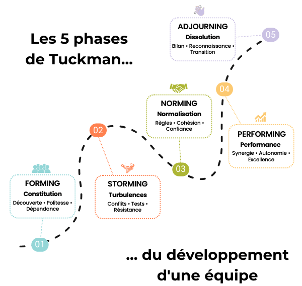

Anacoluthe !?
Comment structurer l'apprentissage
du faire-équipage ?
⚙️ Vous connaissez ça ?
- Tout repose sur vous
Donner le rythme, organiser, relancer, c'est souvent vous, seul·e - Les mêmes consignes, chaque matin
Sans repères visibles, rien ne s'installe - On avance, mais vers où ?
La semaine file, les stagiaires ne voient pas leur progression - Quand ça coince, on fait comment ?
Tensions à bord, pas de cadre pour en parler
4 frictions liées au manque d'outils coopératifs dans l'équipage.
📈 Un groupe qui se forme et coopère passe généralement par ces 5 phases

Les tensions de Jour 3, c'est prévisible, pas un échec.
Tuckman 1965
🔑 Pourquoi c'est si intense
Sous-marins, stations polaires, bateaux : mêmes dynamiques. Ces phases qui prennent des semaines à terre se compriment en 6 jours.
C'est pour ça que Jour 1 est si chargé.
Psychologie des environnements extrêmes
🐜La coordination sans consignes
Les cairns en montagne : chaque caillou posé guide le suivant, sans que les randonneurs se soient parlé.
C'est la stigmergie : coordination par les traces laissées dans l'environnement.
Les affiches Anacoluthe dans le carré, ce sont vos cairns. Le groupe se régule en lisant le mur.
🌱 Le principe : greffer, pas ajouter
- Anacoluthe se branche sur les routines existantes : brief, navigation, débrief
- Chaque moniteurice garde sa patte, son style d'animation
- Les outils structurent, ils ne prescrivent pas
Ça allège la charge moniteurice, ça ne l'alourdit pas.
🔗 Friction → outil
- ⚙️ Fluidifier le quotidien
des rôles clairs qui distribuent l'organisation à l'équipage - 🔁 Arrêter de répéter
des affiches qui posent des repères visuels et soutiennent l'autonomie - 🧭 Rendre la progression visible
des cartes pour les moments clés de l'accueil au débrief final - 🔓 Gérer les accrocs
des cartes joker à la demande si un accroc advient
🧰 Dans la boîte à out's
Affiches
Découverte du jeu, routines, tableau d'équipage, marque-page LDB et leur petit mémo
4 rôles
Bosco, navigateurice, second soigneux, cambusier·ère
7 moments
accueil, accords, rôles, brief, débrief, mi-parcours, final
4 joker
Conflit, temps mort, rediscuter les accords, retour moniteurice
Au total : 4 affiches A4 et 19 cartes A6
🔄 Le rythme du bord
Chaque jour, quelques rituels simples structurent la journée.
10 min le matin, 15 min le soir. Les rôles tournent chaque jour.
📅 Votre Jour 1
Vous faites déjà tout ça :
- ✔️ Interconnaissance, brise-glace
- ✔️ Attentes des stagiaires
- ✔️ Avitaillement
- ✔️ Inventaire et vérification du bateau
- ✔️ Topo sécurité
- ✔️ Accords d'équipage
- ✔️ Premier repas
📅 Avec Anacoluthe, la charge se distribue
- Interconnaissance, brise-glace → M1 structure les questions
- Attentes des stagiaires → M1 couvre ça (4 tours de partage)
- Avitaillement + inventaire → le créneau ambassadeurice ⤵
- Topo CQ → votre programme, rien ne change
- Accords d'équipage → M2 fournit 7 questions-guides
- Premier repas → moment naturel pour les accords ⤵
💡 L'ambassadeurice
Pendant que l'équipage est aux courses, certains stagiaires restent pour l'inventaire. Confiez le kit à l'un·e d'entre elleux : "Explore ça, c'est toi qui présenteras ce soir."
Ce sera votre premier·ère allié·e à bord. Le soir, iel présente le jeu aux autres et lance la discussion sur les accords d'équipage.
💡 L'affiche qui parle toute seule
Posez l'affiche "découverte" sur la table du carré dès l'arrivée. Pas d'explication.
Les stagiaires la trouvent, la lisent, posent des questions. L'intro se fait sans créneau dédié.
💡 Les accords au premier repas
Le premier repas ensemble est un moment naturel de discussion. Glissez M2 là : "Puisqu'on est tous là, on se dit comment on veut vivre cette semaine ?"
Pas de créneau formel. Ça vit dans le repas.
💡 Les rôles, ça peut attendre le J2
Si le soir est trop chargé, décalez M3 (découverte des rôles) au premier brief du J2 matin.
Ça allège le Jour 1, et ça donne un contenu concret au tout premier brief.
👐 À vous d'explorer
Un kit est sur la table, explorez le site sur vos téléphones.
Parcourez, lisez, posez vos questions.

anacoluthe.org
🚧 Un projet en construction
Anacoluthe est un projet de BP. Ce n'est pas un produit fini : c'est un dispositif qui se construit avec les retours du terrain.
- Cette semaine : testez ce qui vous parle, laissez le reste
- En fin de semaine : on fait le point ensemble. Ce qui a marché, ce qui n'a pas pris, ce qu'il faudrait changer
- Vos retours nourrissent directement le projet. Ils serviront aussi à en parler à d'autres moniteurices
Vous n'êtes pas utilisateurices d'un outil, vous êtes co-constructeurices.